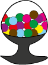

Sweet Feedback Questionnaire
Instructions:You will get candy when you give right answer to more than 7 question!
You can always refresh and try another time!
| 1. | In 2012, what anniversary did Carnegie Mellon Silicon Valley celebrate? a. 5th anniversary b. 10th anniversary c. 15th anniversary d. 20th anniversary CMUSV is 10 years old! |
a | b | c | d |
| 2. | Who is the Director of the Silicon Valley campus? a. Jared Cohon b. Mark Kamlet c. Martin Griss d. Jim Morris Our director is Martin Griss. You get to meet him! |
a | b | c | d |
| 3. | What is the unique Carnegie Mellon Silicon Valley teaching style? a. Lecture-based b. Learn-by-doing c. Remote classes d. Textbook-based Learning by doing makes you perfect! |
a | b | c | d |
| 4. | What is the Carnegie Mellon University motto? a. "Knowledge is liberty." b. "Reach within, shape the future." c. "My heart is in the work." d. "Think. Grow. Change." "My heart is in the work." |
a | b | c | d |
| 5. | The CyLab Mobility Research Center was established to explore developments in a. Mobile computing and networks b. Space travel c. Startups d. Public Transportation Mobile computing and networks |
a | b | c | d |
| 6. | Carnegie Mellon Silicon Valley shares its campus with a. Google b. Microsoft c. U.S. Army d. NASA National Aeronautics and Space Administration |
a | b | c | d |
| 7. | What is the Carnegie Mellon University mascot? a. Avalanche the Golden Bear b. Scotty the Scottie Dog c. Swoop the Red Hawk d. Thunder the Wolf He is cute,isn't he? |
a | b | c | d |
| 8. | How many students are currently enrolled at Carnegie Mellon Silicon Valley? a. ~180 b. ~250 c. ~320 d. ~380 Roughly 180 |
a | b | c | d |
| 9. | Which degree programs at CMUSV can also be taken part-time? a. MS Software Engineering b. MS Software Management c. Ph.D. in Electrical and Computer Engineering d. a & b MS Software Enginnering and MS software Management |
a | b | c | d |